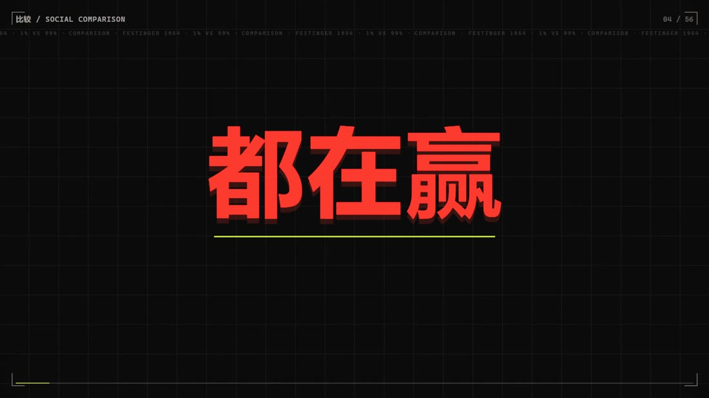
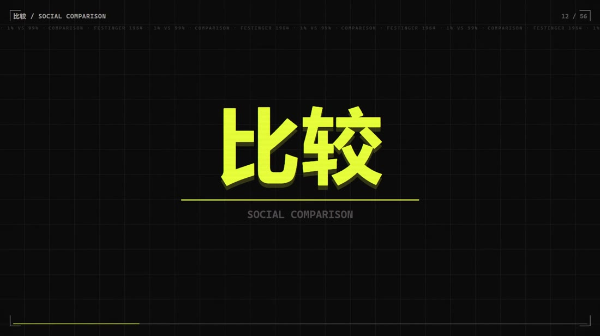
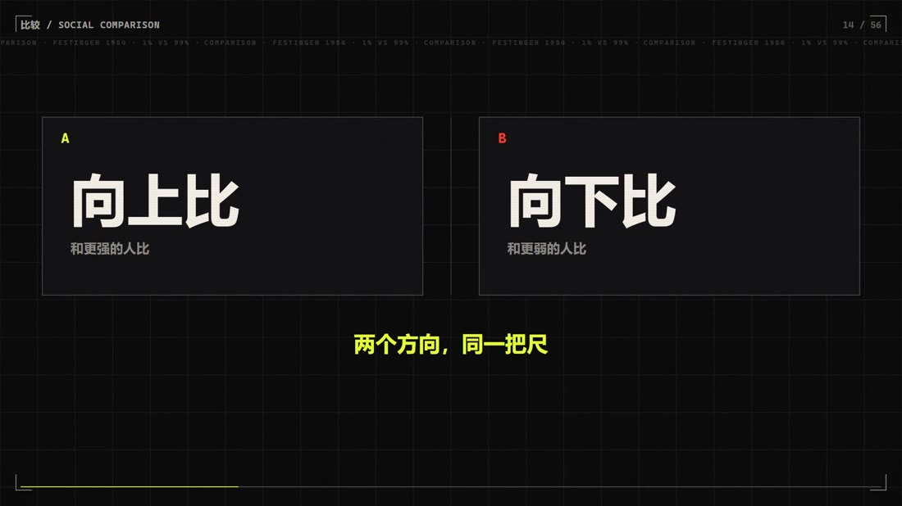
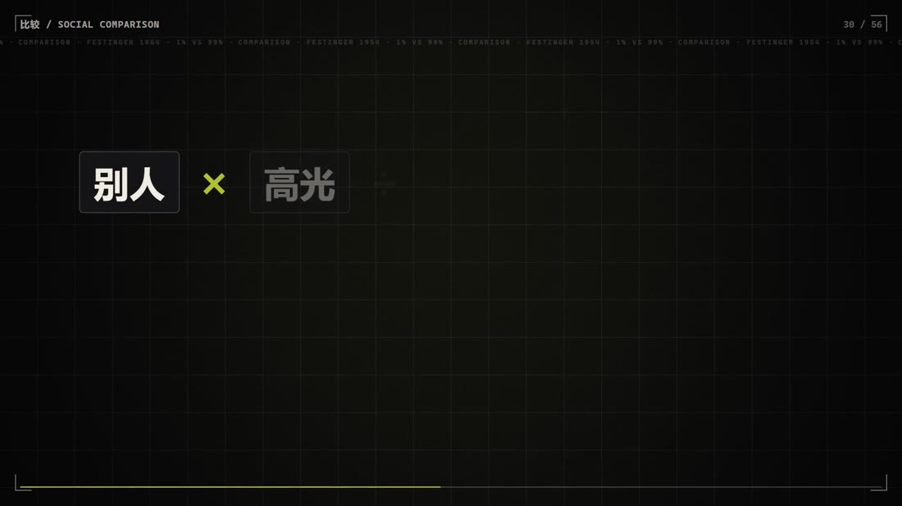
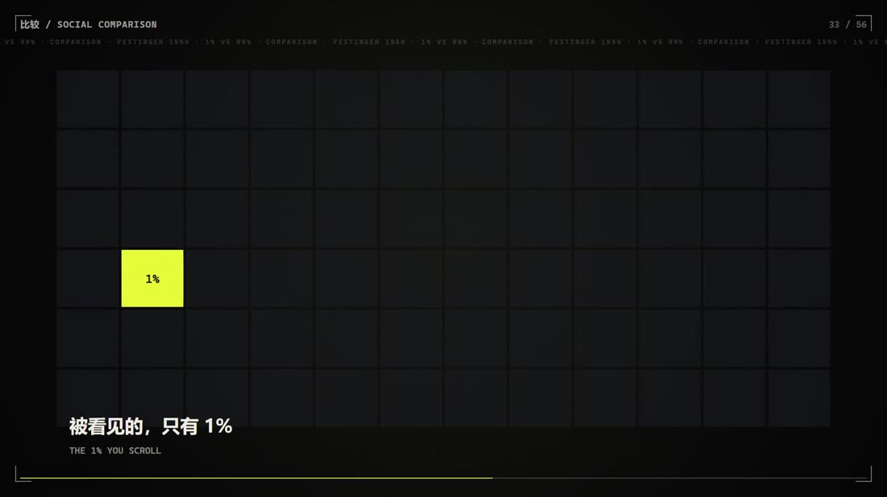
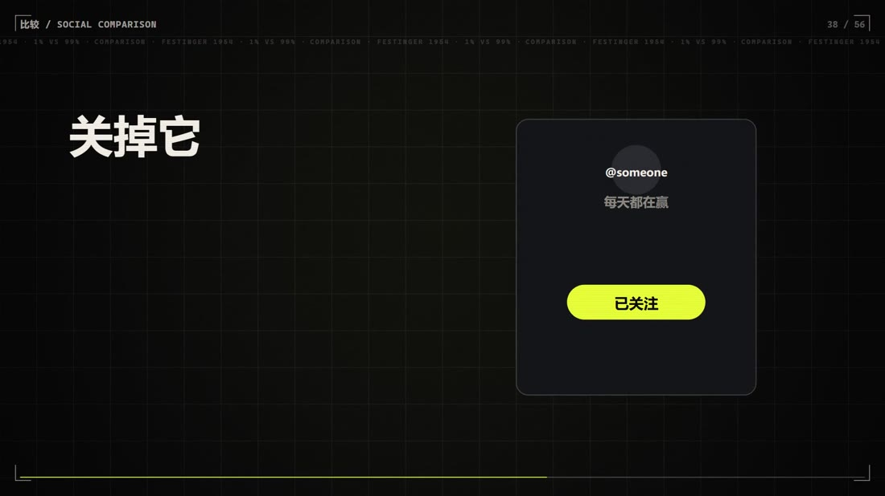

MOTION · 2026
我们不自觉地拿别人的高光，比自己的日常。前 17 秒把「你刷到的每个人，都在赢」推到极致，drop 处片名砸出；然后拆开这件事的机制：别人 × 高光 ÷ 你的日常 = 你不够好，而被看见的只有 1%。最后给三个当晚就能做的动作。
81.1s / 1080p30 / H.264 + AAC 立体声。全片无口播，节奏很快（平均 1.45 秒一切），建议全屏、开声音观看。视频为本地文件，不需要联网。
没有拍摄、没有素材库、没有生成模型。56 个镜头是一张数据表，画面由 Canvas 2D 逐帧算出来。
01密度：56 个镜头压进 81 秒
全片 平均 1.45 秒一切，前 17 秒每 1.08 秒一个卡点。上一版被评价「节奏太慢」，这一版不改时长、只加密切点 —— 同样 81 秒，信息密度翻了一倍。镜头全部写在 js/film.js 的数据表里，改一行就是改一个镜头。
02卡点：切点与网格共用一张时间表
所有切点落在实测节拍网格 0.352 + k × 1.0846 上，画面与音频共用同一份常量。原曲 drop 实测 17.44 s，片名「比较」就压在这一帧上 —— 概念的名字和音乐的高潮同时到达。
03音乐：整首原样播完，一个字不动
上一版为了凑时长剪了音乐，听感是断的。这一版 0–81.06 s 整首原曲原样播放，不裁剪、不拼接、不变速，只在原曲上叠拟音与母带处理（−14.5 LUFS）。代价是画面必须去适配音乐，而不是让音乐让路。
04第二版：把后半段整段重做
初版 42 s 之后连续十几张都是「大字 + 网格」的同一套排版，自己看都觉得同质。这一版换成排行榜 / 高光墙（12×6 格只亮 1 格）/ 99% 墙 / 分数清零 / 取关卡 / 倒计时 / 聊天气泡，并把整段切到深蓝夜间色调，和前面的黑与纸色拉开。顺带修掉一个真 bug：反白卡片把背景翻成宣纸色但文字仍是浅色，导致 9 处出现「白底白字」的空帧，已改为反白时黑字 + 朱红下划线。
从「都在赢」到「你不必赢过谁」，中间是一次机制拆解。






六段式，56 个镜头，全部落在节拍网格上。
| 时间 | 段落 | 内容 |
|---|---|---|
| 0–17.4 s | 钩子 | 「你刷到的每个人，都在赢」→「除了你」→「你只是看错了记分牌」 |
| 17.44 s | drop | 片名「比较」 |
| 17.4–34.8 s | 理论 | 上行 / 下行比较；三种代价（自尊 / 情绪 / 行动） |
| 34.8–52.2 s | 机制 | 「别人 × 高光 ÷ 你的日常 = 你不够好」；1% 被看见，99% 被隐藏 |
| 52.2–69.6 s | 动作 | 关掉记分牌 / 换成过程 / 找一个真人 |
| 69.6–81 s | 收束 | 「你不必赢过谁，只需要比昨天好一点」 |
| 时间 | 拍 | 画面 |
|---|---|---|
| 1.44 | b1 | 你刷到的 |
| 3.61 | b3 | 都在赢 |
| 4.69–7.94 | b4–b7 | 四张高光卡片，一拍一张 |
| 9.03 | b8 | 除了你（反白） |
| 17.43 | drop | 比较 |
| 19.60 | b18 | 上行 / 下行 |
| 39.13 | b36 | 比较公式 |
| 48.89 | b45 | 只有记分牌在赢（反白） |
| 58.66 | b54 | 三件事复述 |
| 73.85 | b68 | 落版 |
这条片子和「做内容」有什么关系
这一条的看点不在技术，在它被推翻过一次。初版的问题是「节奏太慢、画面不够吸引、音乐被剪过」——三条都是体验问题，不是技术问题。改法也不是加特效，而是加密切点、整首播完音乐、把后半段同质化的十几张卡全部换掉。
这和我做内容的动作是同一套：先看观众在哪里会走神，再回去改结构，而不是把原来那版再做精致一点。推翻自己的成稿比从头做一条难，但只有这样才能真的变好。
这条片子是 vibecoding 完成的：代码由 AI 模型生成，但概念、结构、镜头表、节奏判断与第二版的推翻决策——这些是人的判断。模型负责把它写出来，我负责决定写成什么、什么时候该推倒重来。
其中「白底白字」那个 bug 最能说明分工：模型不会自己发现 9 个空帧，要人一帧一帧看过去才发现反白时文字颜色没跟着翻。验收这件事没法外包。
这也是我认为 AI 内容生产的正确姿势：不是「让 AI 做一条片子」，而是「我说清楚要什么，AI 帮我把它造出来，我验收」。验收标准在我这边。
render.mjs 逐帧出图）· Python（音频合成与母带）· FFmpeg（编码 / 封装）。